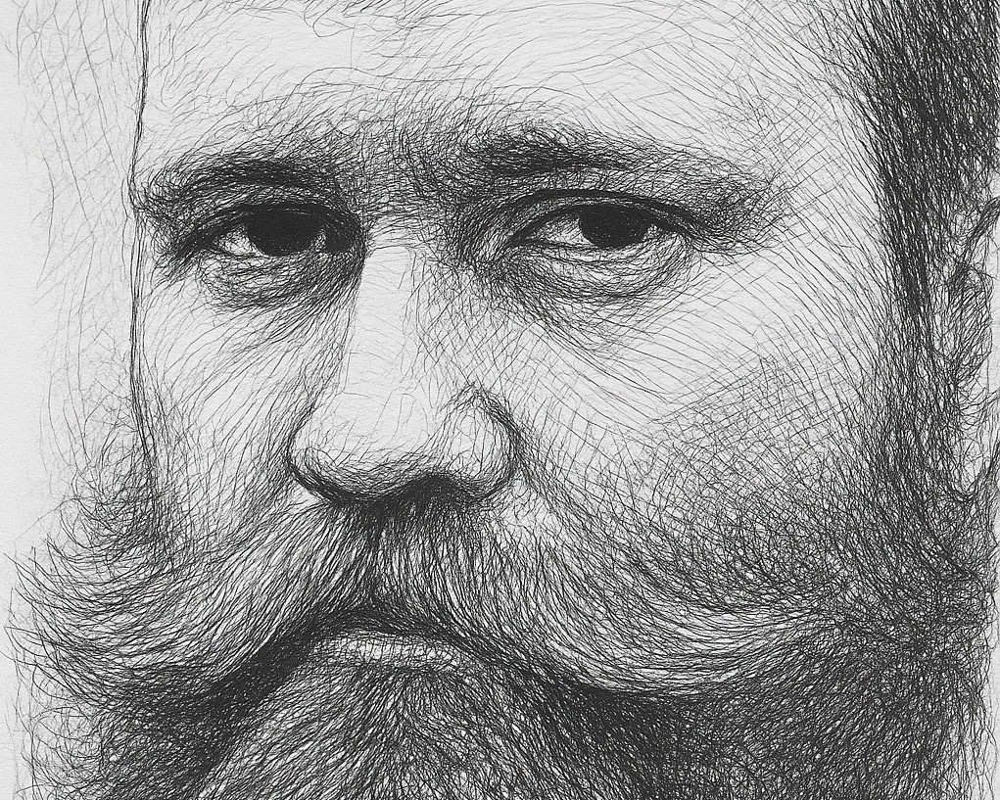

Sergey V. Popov
I'm currently working as a Senior Lecturer in the Cardiff Business School. I am working mostly in the fields of applied micro and econometrics, I invent models, quantify their predictions and test their consistency with the data. My most recent CV is here.
Research supervision: I am eager to supervise PhD students in many topics, from international trade to social choice to corruption to mechanism design, but my specialty is in applied micro theory. If you have a research idea, write to me, I try to reply to all the emails I get.
News and Plans
- 3-6 Sep 2025 Presentation at Economic Science Association 2025 meeting, Brno, Czechia.
- 1 July 2025 Presentation at Royal Economic Society 2025 meeting, Birmingham, England.
- 8 May 2025 Presentation at Irish Economic Association 2025 meeting, Belfast, Northern Ireland.
- 27 March 2025 New paper posted: Unrewarded Cooperation with Arkady Konovalov and Daniil Luzyanin.
- 18 March 2025 Presentation at ECARES at Universite Libre de Bruxelles (ULB), Brussels, Belgium.
- 11 March 2025 Presentation at University of Illinois, Urbana-Champaign, IL, USA.
- 7 March 2025 Presentation at University of Indiana, Bloomington, IN, USA.
- 12 Dec 2024 Leadership in Scholarship: Editors' Influence on the Profession's Narrative accepted to Scottish Journal of Political Economy.
- 13 Nov 2024 Presentation at UNSW Economics seminar series, Sydney, Australia.
- 12 Nov 2024 Presentation at University of Sydney Economics seminar series, Sydney, Australia.
- 7 Nov 2024 Presentation at RMIT Economics seminar series, Melbourne, Australia.
- 5 Nov 2024 Presentation at Monash Economics seminar series, Melbourne, Australia.
- 31 Oct 2024 Presentation at Cardiff Economics seminar series, Cardiff, Wales.
- 16 Oct 2024 Presentation at Brunel Economics seminar series, London, England.
- 3 Oct 2024 Presentation at UEA Economics seminar series, Norwich, England.
Current Research (more)
Unrewarded Cooperation

Full text. With Arkady Konovalov and Daniil Luzyanin.
Experiment participants in a social dilemma game choose to cooperate over defecting, even if neither is more individually beneficial. High levels of cooperation cannot be explained by favorable labels for actions, collusion, k-level reasoning, quantal response behavior, or misplaced optimism about others’ actions, but can be rationalized by the Charness and Rabin (2002) preference model. However, cooperation rates fall with changes in payoffs, which cannot be explained by the standard formulation; to account for these results, we introduce a generalization of the model. Presented at:
- ECARES, Solvay Brussels School of Economics and Business, 2025, Belgium.
- University of Illinois. Urbana-Champaign, 2025, USA.
- University of Indiana, Bloomington, 2025, USA.
- University of Sydney, 2024, Australia.
- Monash University, 2024, Australia.
- Cardiff University, 2024, Wales.
- University of Birmingham, 2024, England.
Same Sex Marriage, The Great Equalizer
With Aleksey Parakhonyak. Full text.
We demonstrate the abundance of asymmetric equilibria in a standard marriage market model, when agents must only engage in heterosexual marriage: agents of different gender are not guaranteed to have the same payoff even under equal opportunities, even if all other factors, such as own type or the distribution of partner types, are same across genders. Then we allow for same-sex marriage, and we demonstrate that under equal opportunities, when genders are symmetrical, only symmetric equilibria survive. Presented at:
- Lund University, 2018, Lund, Sweden.
- EARIE, 2018, Athens, Greece.
- Econometric Society European Meeting, 2018, Cologne, Germany.
- European Economic Association Congress, 2017, Lisbon, Portugal.
- Department of Economics, University of Leicester, England.
- 5th Game Theory Society World Congress, Maastricht, Netherlands.
- Lancaster Game Theory Conference, 2015, Lancaster, England.